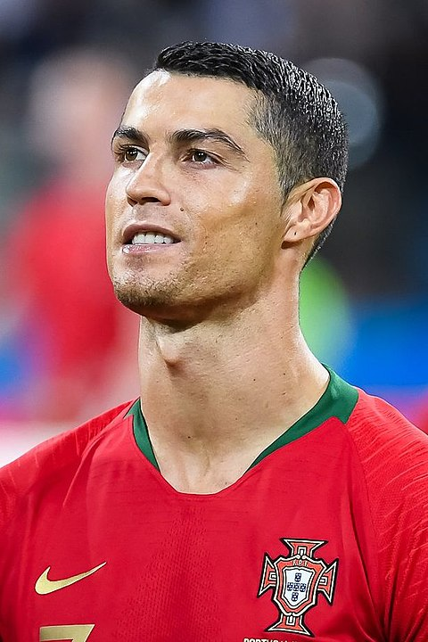

Información

Cristiano Ronaldo dos Santos Aveiro (Funchal, Madeira, 5 de febrero de 1985), conocido como Cristiano Ronaldo, es un futbolista portugués. Juega como extremo izquierdo o delantero y su equipo actual es el Al-Nassr F. C. de la Liga Profesional Saudí.18Es internacional absoluto con la selección de Portugal, de la cual es capitán y máximo goleador histórico.
Considerado con frecuencia el mejor y más completo futbolista,19así como el mayor goleador del mundo,20además de uno de los mejores de todos los tiempos;n 321 es uno de los futbolistas más laureados de la historia, habiendo ganado, entre otras distinciones, cinco veces el Balón de Oro, cinco premios de la FIFA al mejor jugador del mundo y cuatro Botas de Oro. En 2020, tuvo el honor de ser elegido el mejor Jugador del Siglo xxi en la gala de los Globe Soccer Awards,2223 convirtiéndose en el primer futbolista europeo y el primer portugués en recibirlo, además de ser incluido en el Dream Team del Balón de Oro.24
Identificado habitualmente en los medios de comunicación con el numerónimo CR7,n 425 es, con 834 goles, el máximo goleador en la historia del fútbol profesional,2627 y con 450,28 el máximo goleador histórico del Real Madrid Club de Fútbol,n 529 consiguiéndolo en las nueve temporadas que jugó en este club. Es además, según los portales expertos en estadísticas históricas de la RSSSF y la IFFHS, el tercer máximo goleador en los campeonatos de Primera División de Europa, con 498 goles —once goles más a nivel mundial para un total de 509 goles—,30 siendo estos datos reconocidos por la UEFA y la FIFA.n 63132
A lo largo de su carrera profesional, ha conseguido batir diversos récords.
Entre ellos, se destacan ser el primer jugador que consiguió ganar cuatro Botas de Oro, el primer jugador en ganar el Premio Puskás, ser el segundo futbolista más laureado del Balón de Oro (5), ser el primero en ganar el premio The Best FIFA —y el que más lo ha logrado con dos junto a Robert Lewandowski y Lionel Messi—, ser el jugador que más veces ha ganado el Premio UEFA al Mejor Jugador en Europa, con tres títulos,33 ser el máximo goleador histórico de la selección portuguesa (122), el máximo goleador mundial a nivel de selecciones34 (en 2021, ingresando en el Guinness World Records),35 y ser el máximo goleador histórico de la Liga de Campeones (141) contando la fase previa,36 el jugador con más partidos (187), más asistencias (42),37 competición en la que también posee las marcas de más goles en una edición del torneo —17 goles en 11 partidos (2013-14)—, de más goles en una fase de grupos del torneo —11 goles en seis partidos (2015-16)— y de más veces máximo goleador del torneo con siete ediciones. Es, además, el madridista que menos partidos necesitó (92) para alcanzar los cien goles en el campeonato nacional de Liga y el jugador que menos partidos necesitó (140) para llegar a 150 goles en la historia de la Liga,3839 el primer futbolista en la historia de la competición que consiguió marcarle a todos los equipos a los que se enfrentó en una temporada,40 el único futbolista capaz de marcar en seis Clásicos consecutivos,41 o el único en anotar en seis visitas consecutivas al Camp Nou, estadio de máxima rivalidad para los blancos.42
Ronaldo comenzó su carrera en el Sporting Club de Portugal, equipo en el que obtuvo la Supercopa de Portugal antes de firmar con el Manchester United en 2003 a los 18 años, donde se consagró como futbolista de élite tras conquistar tres Premier League, dos EFL Cup, una FA Cup, dos Community Shield, una Liga de Campeones y una Copa Mundial de Clubes, fue galardonado con el Balón de Oro,43 el Jugador Mundial de la FIFA44 y la Bota de Oro,45 trofeos que le acreditaban como mejor futbolista del mundo a fecha de 2008.
Tras protagonizar el traspaso más caro en la historia del fútbol en su momento,46 recaló en el Real Madrid Club de Fútbol, donde mejoró como futbolista llegando a sus más altos registros en juego y goles. En el club español fue el primer jugador en superar la histórica cifra de treinta y ocho goles en una temporada de Liga, situando la nueva marca en cuarenta goles,47 registro que le sirvió para ganar su segunda Bota de Oro en el 2011.48 Conquistó como madridista dos Copas del Rey,49 dos Ligas,n 750 y dos Supercopas de España, completando así la triple corona española, más cuatro Ligas de Campeones, tres Supercopas de Europa y tres Copas Mundiales de Clubes. Sus actuaciones le llevaron a conquistar otros cuatro Balones de Oro —en 2013, 2014, 2016 y 2017—5152 y otras dos Botas de oro —en 2014 y 2015— y a situarse entre los tres mejores jugadores del mundo durante ocho temporadas.53 En 2018 fichó por la Juventus en un traspaso por valor inicial de 100 millones de euros (88 millones de libras esterlinas), el traspaso más caro para un club italiano y el más caro para un jugador mayor de 30 años. En el club turinés ganó dos títulos de la Serie A, dos Supercopas Italianas y una Copa Italia, obteniendo la triple corona italiana, antes de regresar al Manchester United en 2021.
Internacional absoluto con la selección portuguesa desde 2003,54 ha disputado cinco Eurocopas, cinco Mundiales, una Copa Confederaciones y dos Ligas de Naciones, en donde sus máximos logros fueron la obtención de los títulos en la Eurocopa de 2016 y en la Liga de Naciones 2018-19.55 En cuanto a la Copa Mundial y a la Copa Confederaciones, un cuarto lugar en Alemania 2006 y un tercer lugar en Rusia 2017 respectivamente, fueron sus mejores actuaciones. Es uno de los jugadores miembro del FIFA Century Club, formado por aquellos futbolistas con más de cien internacionalidades con su selección. Sus 198 partidos le colocan primero en el listado a fecha de 2023 —el que más ha disputado de la historia de Portugal— y, lógicamente, también primero a nivel UEFA. En 2015, Ronaldo fue nombrado el mejor jugador portugués de todos los tiempos por la Federación Portuguesa de Fútbol.
Es uno de los atletas más famosos y comercializables del mundo, así como también una de las figuras más mediáticas de su generación.
56 Fue clasificado como el atleta mejor pagado del mundo por Forbes en 2016 y 2017, y como el atleta más famoso del mundo por ESPN de 2016 a 2019. Time lo incluyó en su lista de las 100 personas más influyentes en el mundo en 2014. En el 2020, obtuvo ingresos por 105 millones de dólares, convirtiéndolo en el primer billonario del fútbol.57 Para el año siguiente, sus ganancias fueron de 120 millones de dólares.58
Desde 2014, es Gran Oficial de la Orden del Infante Don Enrique, uno de los máximos reconocimientos otorgados en Portugal, por su prestación de servicios relevantes otorgados a su país, así como su expansión cultural, histórica y de valores.59
Fuente Wikipedia